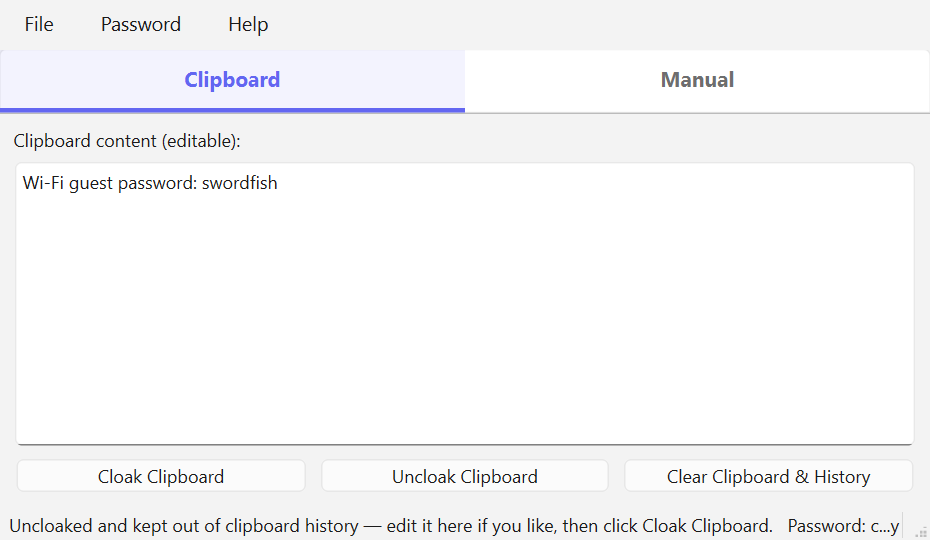
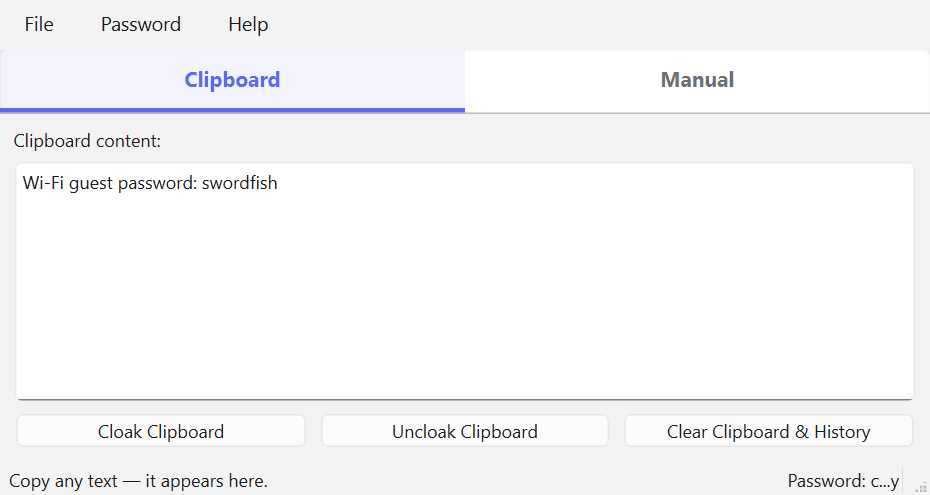
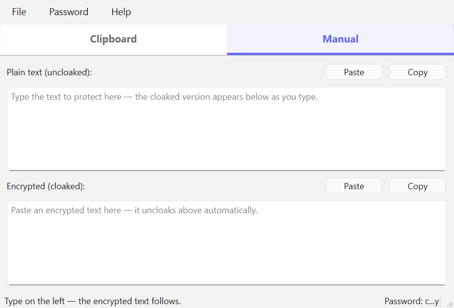
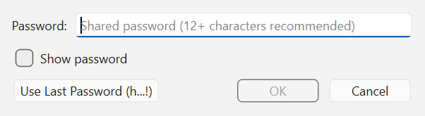
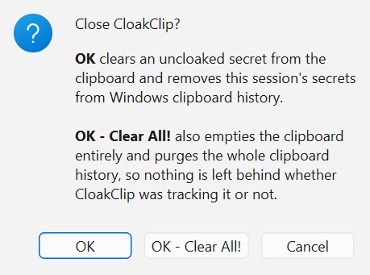

CloakClip turns a private message into an ordinary line of characters that only someone with your password can read. It travels through any chat, email or note — no attachments, no plugins, nothing for the other person to install.
Version 1.0.1 · Windows and macOS · single file, no installer · nothing is ever sent anywhere

Anything you type into a chat, an email, or a note usually outlives the moment you send it. Messages sit on servers, get forwarded, get backed up, and stay searchable long after the conversation is over.
CloakClip does not try to replace any of that. It lets you protect just the part that matters, inside the tools you already use. You cloak the text with a password, paste the result wherever you were going to type it, and share the password by some other route. Anyone who reads the conversation later sees a meaningless block of characters.
Because the output is plain text, it goes wherever text goes: a work chat, a support ticket, an SMS, a printed page, a sticky note. The person at the other end needs CloakClip and the password — nothing else.
Messages your employer or the platform keeps a copy of, and email that sits on servers, gets forwarded and gets backed up.
A Wi-Fi password, an API key, a licence key, or account details you need to hand to a colleague or a family member right now.
Issue trackers and shared documents that quietly have a wider audience than you had in mind when you wrote them.
Recovery codes, account numbers, or a private journal entry inside a notes app that syncs to somebody else's cloud.
The made-up answers to security questions, kept where you will find them again but nobody else can read them.
Anything routed through a service you have no say over — right down to leaving yourself a note in a place you would rather not trust.
From download to your first protected message in about a minute.
Send the password a different way than the message. If you email a cloaked block, do not email the password — text it, say it in a call, or hand it over in person. Both halves in the same place means no protection at all.

Everything CloakClip does, in the order you are likely to need it.
CloakClip is a single self-contained file. There is no installer, no runtime to add, and nothing written outside your own user folder.
Download CloakClip.exe and put it anywhere you like — your desktop, a
folder, a USB stick. Double-click to run it. The first time, Windows may show a SmartScreen
notice because the file is not code-signed: choose More info, then
Run anyway.
Download CloakClip-macos.zip, unzip it, and move CloakClip.app to
your Applications folder. The first time, right-click the app and choose Open
rather than double-clicking, so macOS lets you run an unsigned app.
CloakClip stores two things on your machine and nothing else: your remembered passwords (encrypted) and your window position and theme choice. See Passwords for where they live and how to erase them.
This is the fast path, and the one most people use. The box always shows what is currently on your clipboard, and the three buttons act on it directly.
| Button | What it does |
|---|---|
| Cloak Clipboard | Encrypts whatever is shown and puts the encrypted version on the clipboard, ready to paste. |
| Uncloak Clipboard | Decrypts it and puts the original text back on the clipboard, ready to paste. The decrypted text is marked so Windows keeps it out of clipboard history. |
| Clear Clipboard & History | Empties the clipboard and purges Windows clipboard history. Items you pinned in Win+V are kept. |
The box is editable, which turns the tab into a complete round trip. Uncloak a message you received, change the wording in place, and click Cloak Clipboard to encrypt your reply — then paste it back into the conversation. The plain text of your reply never has to exist anywhere outside the app.
Your edits reach the clipboard a moment after you stop typing, and edits to a decrypted message stay protected exactly as the decryption was. If you click Cloak immediately after typing, your latest edit is used — not a stale copy.
The Manual tab is for when you want full control, or when you want to read something without it ever touching your clipboard. It has two fields that stay in sync, and no Cloak or Uncloak buttons at all.

Each field has its own Paste and Copy buttons. Nothing goes to your clipboard until you press one, which is what makes this the safest way to read something: the secret is displayed on screen and nowhere else.
One password is active at a time, shown masked at the bottom right of the window. Everything you cloak or uncloak uses it until you choose another.

h…! — enough to recognise, not enough to
reveal.A password is only remembered after it actually works — a successful uncloak, or a cloaked result you copied. Typos and wrong guesses are never stored.
On Windows the list is encrypted with DPAPI and saved as
%APPDATA%\CloakClip\passwordHistory.bin, tied to your Windows account: unreadable
from another account or another machine. It is decryptable by software running as you, which is
the same trade-off browsers make for saved passwords — if you would rather keep nothing,
use Clear Password History.
Share the password out of band. Whatever channel carries the cloaked message, use a different one for the password. Putting it in the next chat message is the same channel, and defeats the point.
Help > Theme offers Use System Theme (the default), Light and Dark. The override applies to CloakClip alone and is remembered. Left on system, the app follows along if you switch Windows between light and dark while it is running.
CloakClip also reopens at the size and position you left it. If that position was on a monitor
that is no longer attached, the window is recentred on your main screen instead of opening
somewhere you cannot reach. Both settings live in
%APPDATA%\CloakClip\settings.ini; delete the file to start fresh.
Closing the window asks how you would like to leave.

File > Exit and Clear All! (Ctrl+Shift+Q) does the thorough version in one step without asking.
Clear All exists as a deliberate second line of defence. The automatic cleanup is careful, but it can only remove text it recognises — the exact strings this session handled. Clear All does not try to recognise anything; it removes everything. Use it whenever you would rather not think about what the app happened to see.
Windows keeps a history of everything you copy — the Win+V panel — and can sync it to the cloud. Left alone, a decrypted secret you paste once survives there long afterwards. This is the problem CloakClip spends most of its effort on.
On the Manual tab, decrypted text is only ever displayed. If you just need to read a message, it never reaches the clipboard, and there is nothing to clean up.
When decrypted text does go to the clipboard, it carries the same markers password managers use, so Windows keeps it out of clipboard history and out of cloud sync — while it still pastes normally everywhere.
Whatever you hand CloakClip to encrypt was copied by some other app first, which already recorded it. CloakClip tracks it so it can be removed later, even though the exposure happened before CloakClip saw the text.
If you copy a protected text again by hand — selecting it on screen, or re-copying it after pasting — that copy is unmarked and Windows records it. CloakClip notices, protects it again, and deletes the recorded entry.
Closing the app clears a copied secret from the clipboard and removes this session's secrets from the history. Clear All! goes further and empties everything.
The honest limits. The automatic matching only recognises exact text from the current session, so a secret you edited outside CloakClip, or one from a previous run, is invisible to it — use Clear All for those. And nothing here can reach a secret you already pasted somewhere else: clearing your clipboard does not un-send a message.
CloakClip uses AES-256 in CBC mode. The key is derived from your password with SHA-256, a fresh random 16-byte initialization vector is generated for every message and prepended to the ciphertext, and the whole thing is Base64-encoded so it survives being pasted anywhere.
Because the initialization vector is random, cloaking the same message twice produces two completely different strings. Both decrypt to the same text — use whichever you copied. This is deliberate: without it, identical messages would produce identical output, and anyone watching could tell that two messages matched without knowing the password. The only practical consequence is that you cannot compare two cloaked strings to see whether they hold the same secret.
Use a long password. The key is derived with a single hash rather than a slow stretching function like PBKDF2 or Argon2, so a short or common password is vulnerable to offline guessing by someone who has the cloaked text. Length is what protects you.
Any tool implementing the same scheme can read CloakClip's output, and CloakClip can read theirs.
Encrypting and decrypting work identically on both. The difference is in the clipboard protections, which depend on facilities the operating system provides.
| Windows | macOS | |
|---|---|---|
| Cloak and uncloak | Yes | Yes |
| Both tabs, passwords, themes | Yes | Yes |
| Keeping secrets out of clipboard history | Yes | Not yet |
| Purging clipboard history | Yes | No system history to purge |
| Remembering passwords | Yes, encrypted with DPAPI | Not yet |
macOS has no built-in clipboard history, so that particular exposure does not exist there in the first place. Where a protection is not implemented, the macOS build reports it as unavailable rather than implying it is present.
Check that the whole encrypted string was copied — a message wrapped across lines by an email client can lose characters at the edges. Leading and trailing spaces are handled for you.
The clipboard is probably empty, or no password is selected. The status bar at the bottom of the window always says which.
The download is not code-signed. Choose More info then Run anyway. You can verify what you downloaded against the published release on GitHub.
Another program was holding the clipboard at that moment. CloakClip retries automatically and tells you if it truly could not write — just try again.
Something reached the history by a route the app could not match — for example text you edited elsewhere, or a secret from a previous session. Use Clear Clipboard & History, or close with Clear All!.
Use Password > Clear Password History, then delete the folder
%APPDATA%\CloakClip. That is everything the app keeps.
Free, no account, no ads, no telemetry. Your text never leaves your machine.
A single CloakClip.exe, about 50 MB. No installer — put it anywhere and
run it.
Both links open the GitHub release page — scroll to Assets and pick the file for your system. The full source code is public, so anyone can check exactly what the app does with their text.
CloakClip is free, has no ads, collects nothing about you, and never sends your text anywhere. Everything happens on your own machine. That is how a privacy tool ought to work — and it is also why tools like it are hard to sustain: there is no data to sell and no subscription to bill, so nothing pays for the work behind them.
Small tools take real time to build and, more importantly, to keep alive. Operating systems change, security behaviour shifts underneath them, bugs surface in real use, and features get added because someone asked. A donation, however small, is what makes that continued attention possible — and it funds the next free tool as well as the upkeep of this one.
If CloakClip saved you a worry or a wasted hour, please consider chipping in.
Secure payment through PayPal — no account required, any amount appreciated. Thank you for supporting independent, privacy-respecting software.